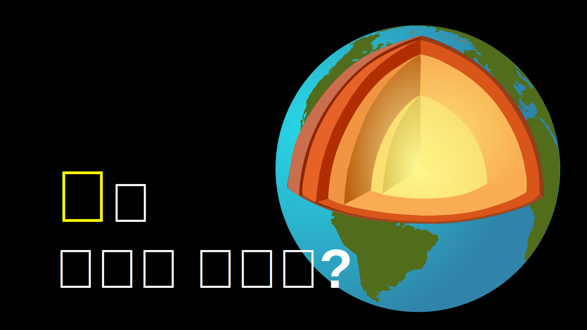
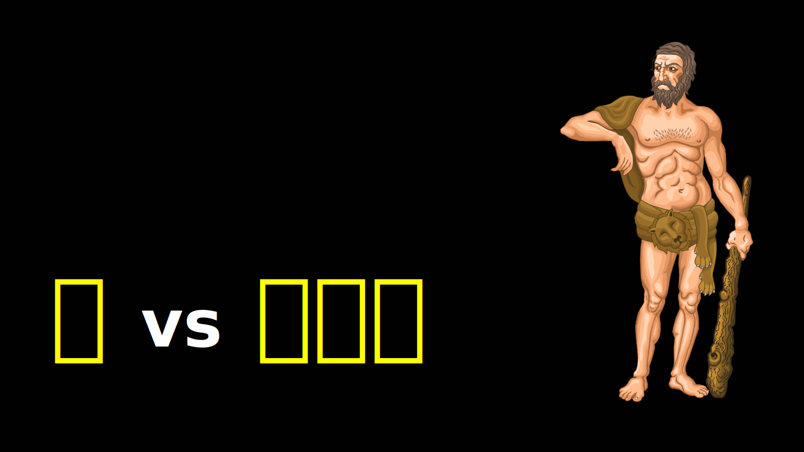
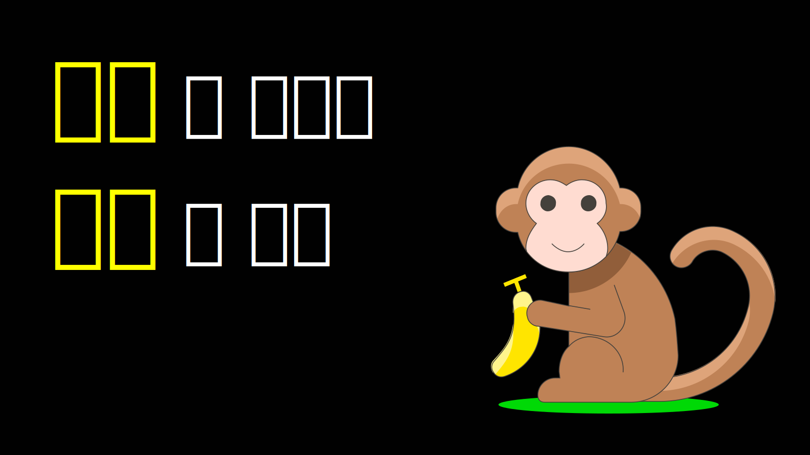

기초과학 중1 중2 중3 고1(공통) 고2(선택) 지구 에너지 기관계 지구과학 화학 물리 생물 지각 힘 분류학 모델링 물질의 상태 빛 원소 전기 태양계 식물 동물 물성 수권 열 반응식 기권 운동 에너지 신경계 유전 에너지 전환 우주 우주의 구성 지구의 구성 에너지 순환 지구 에너지 순환 생명의 순환 화학적 변화 생명의 변화 생태계 보존 에너지 보존 1.지권의 변화 2.여러가지 힘 3.생물의 다양성 4.기체의 성질 5.물질의 상태 변화 6.빛과 파동 1. 물질의 구성 2. 전기와 자기 3. 태양계 4. 식물과 에너지 5. 동물과 에너지 6. 물질의 특성 7. 수권과 해수의 순환 8.열과 우리의 생활 1. 화학 반응의 규칙과 에너지 변화 2. 기권과 날씨 3. 운동과 에너지 4. 자극과 반응 5. 생식과 유전 6.에너지 전환과 보존 7. 별과 우주 1. 물질의 규칙성과 결합 2. 자연의 구성물질 3. 역학적 시스템 4. 지구 시스템 5. 생명 시스템 6. 화학 변화 7. 생물 다양성과 유지 8. 생태계와 환경 9. 발전과 신재생 에너지 지구의 구성, 돌의 기원 미세한 세상에 대한 탐구 중력, 부력, 탄성력, 마찰력 생물 분류 체계 고체, 액체, 기체 빛, 파동 원자, 분자, 이온 마찰력, 로렌츠 힘 지구, 달, 태양, 행성, 별 광합성, 포도당 소화, 호흡, 순환, 배설 증류, 여과, 크로마토그래피 해수, 담수 대류, 전도, 복사, 비열 화학식, 이상기체법칙 대기권, 오존, 기후 일 감각기관, 신경, 호르몬 DNA, 형질 위치E, 변환 별의 탄생 무엇으로 만들어졌나? 어떤 식으로 서로 작동하나? 계속 유지되는가? 어떻게 할 것인가? 쪼개진 돌 입자 모델 힘의 누적 식물계 끊는점 원소 분자 원소 원소 분자 전자 탄수화물 종합 종합 단원별  1. 지권의 변화 지구의 구성, 돌의 기원  2.여러가지 힘 미세한 세상에 대한 탐구  3.생물의 다양성 중력, 부력, 탄성력, 마찰력 4.기체의 성질 생물 분류 체계 5.물질의 상태 변화 고체, 액체, 기체 6.빛과 파동 빛, 파동 1. 물질의 구성 원자, 분자, 이온 2. 전기와 자기 마찰력, 로렌츠 힘 3. 태양계 지구, 달, 태양, 행성, 별 4. 식물과 에너지 광합성, 포도당 5. 동물과 에너지 소화, 호흡, 순환, 배설 6. 물질의 특성 증류, 여과, 크로마토그래피 7. 수권과 해수의 순환 해수, 담수 8.열과 우리의 생활 대류, 전도, 복사, 비열 1. 화학 반응의 규칙과 에너지 변화 화학식, 이상기체법칙 2. 기권과 날씨 대기권, 오존, 기후 3. 운동과 에너지 일 4. 자극과 반응 감각기관, 신경, 호르몬 5. 생식과 유전 DNA, 형질 6.에너지 전환과 보존 위치E, 변환 7. 별과 우주 별의 탄생 1. 물질의 규칙성과 결합 무엇으로 만들어졌나? 2. 자연의 구성물질 어떤 식으로 서로 작동하나? 3. 역학적 시스템 계속 유지되는가? 4. 지구 시스템 어떻게 할 것인가? 5. 생명 시스템 6. 화학 변화 7. 생물 다양성과 유지 8. 생태계와 환경 9. 발전과 신재생 에너지